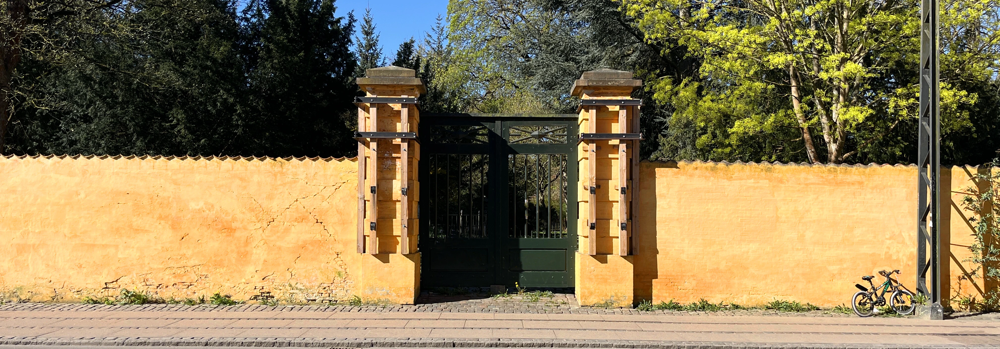
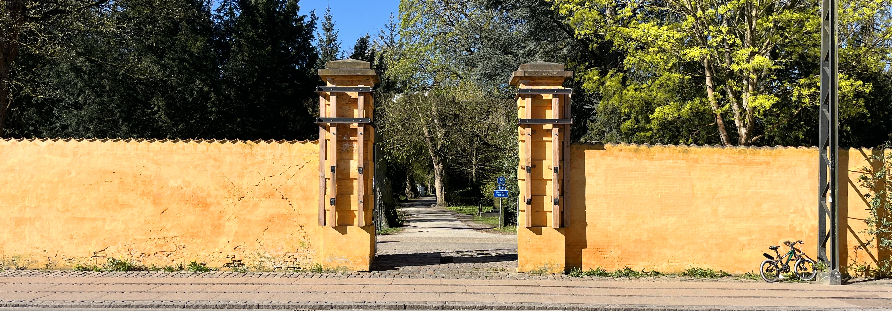
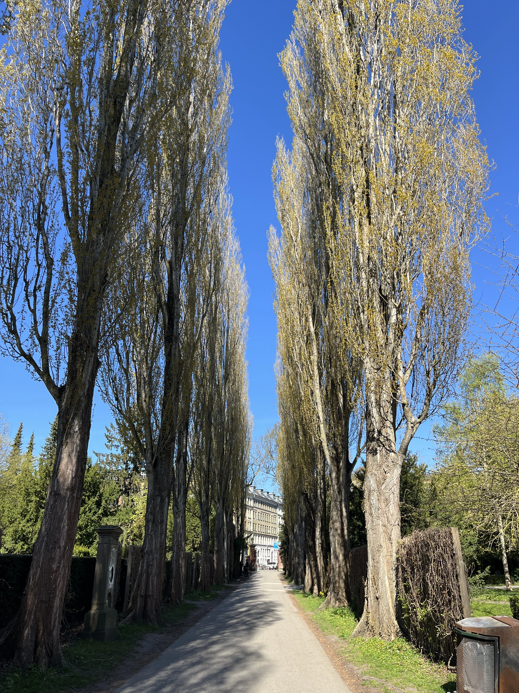
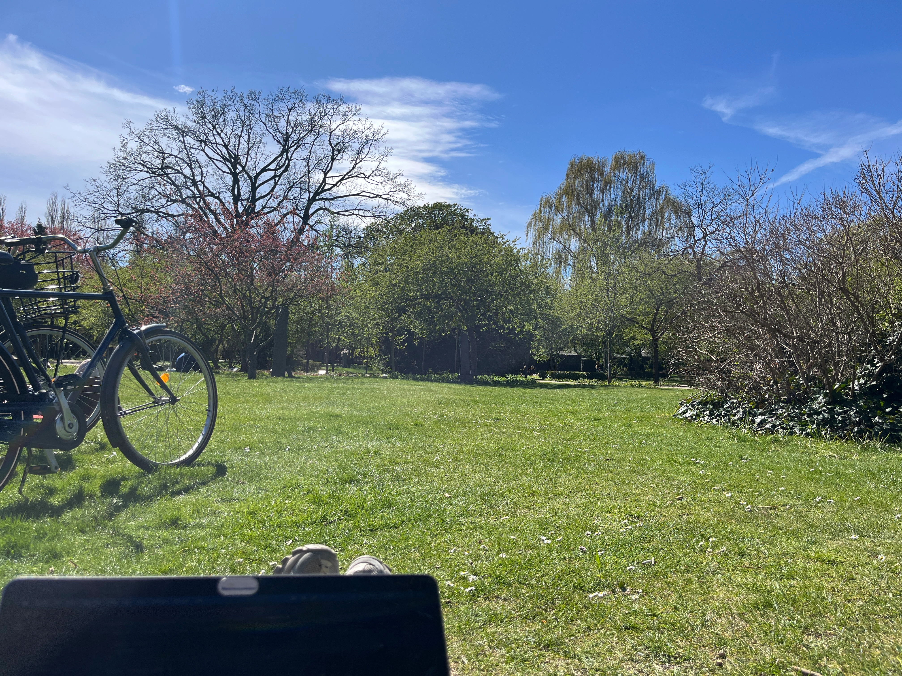
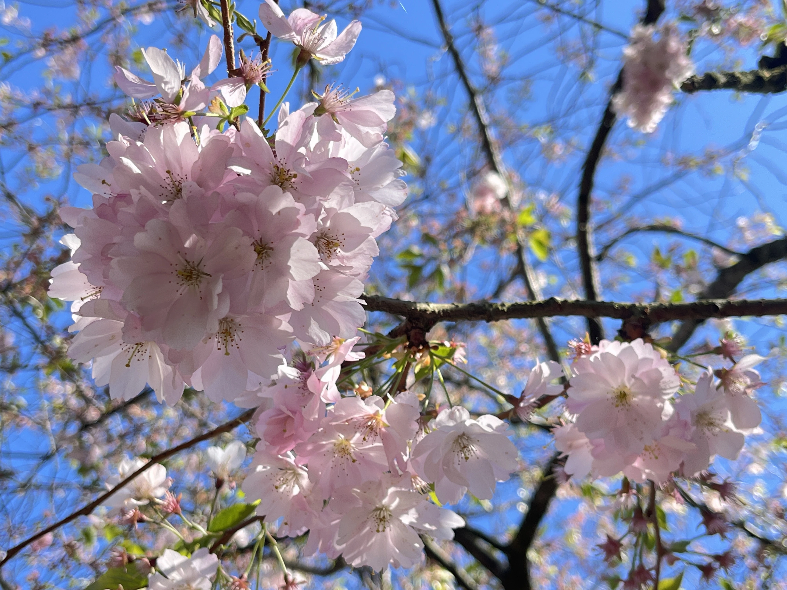
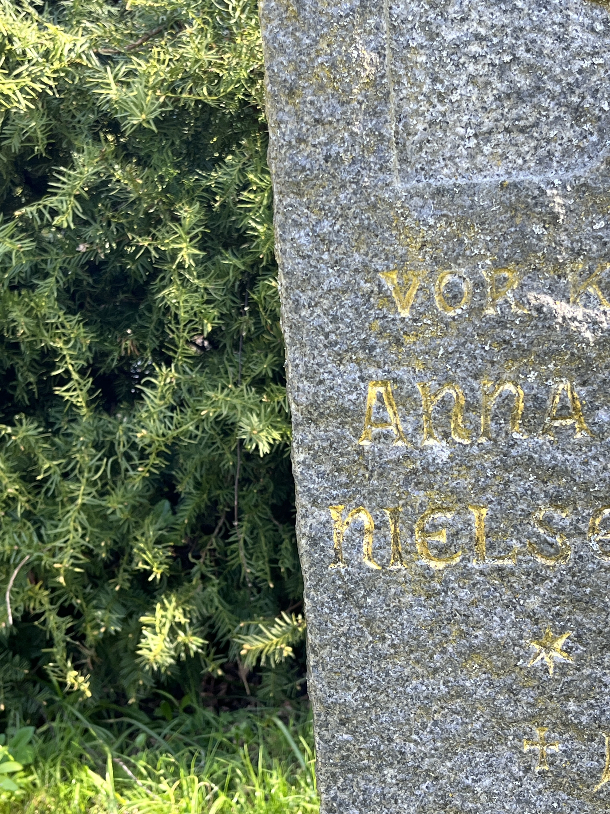

Gå i stå
En gåtur i Assistens Kirkegården
Midt i København ligger Assistens Kirkegården.
Bag de gule mure er tiden gået i stå for alle de liv der nu mindes via gravsten med smukke ord.
På en gåtur gennem de stille alléer opfordres du til pludseligt at stoppe op –
midt i det hele, uden forklaring. Lad blikket hvile på træer, gravsten eller lysninger. Mærk hvordan kroppen falder til ro, mens omgivelserne fortsætter deres egen langsomme fortælling. At gå i stå her er ikke et afbrud, men en måde at
være til stede på.
Gå i stå i parken men husk at respektere både de levende og døde der færdes her
Har du brug for asistance til Assistens?
Dyk ned i detaljerne...



